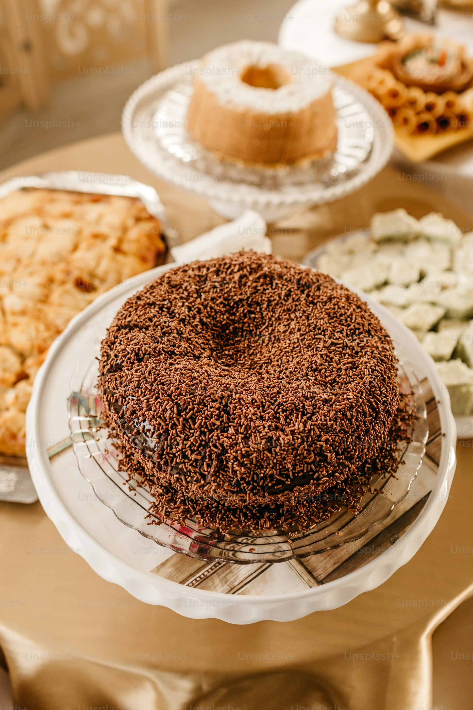

🍫 Receita de Bolo de Chocolate
Uma receita simples e deliciosa de bolo de chocolate para fazer em casa.
Ingredientes
2 xícaras de farinha de trigo
1 xícara de açúcar
1 xícara de chocolate em pó
3 ovos
1 xícara de leite
1 colher de fermento em pó
Modo de Preparo
- Pré-aqueça o forno a 180°C.
- Misture os ingredientes secos.
- Adicione os ovos e o leite.
- Misture bem até formar uma massa homogênea.
- Misture bem até formar uma massa homogênea.
- Adicione o fermento por último.
- Coloque em uma forma untada.
- Asse por aproximadamente 40 minutos.
Informações Extras
- 🕝 Tempo de preparo: 50 minutos
- 🍽️ Rendimento: 8 porções